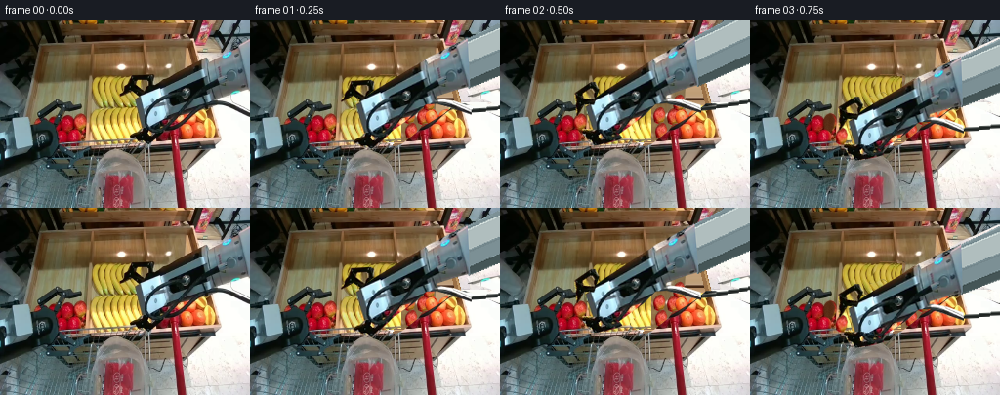
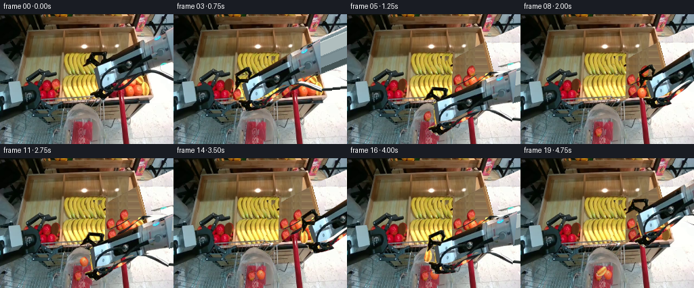
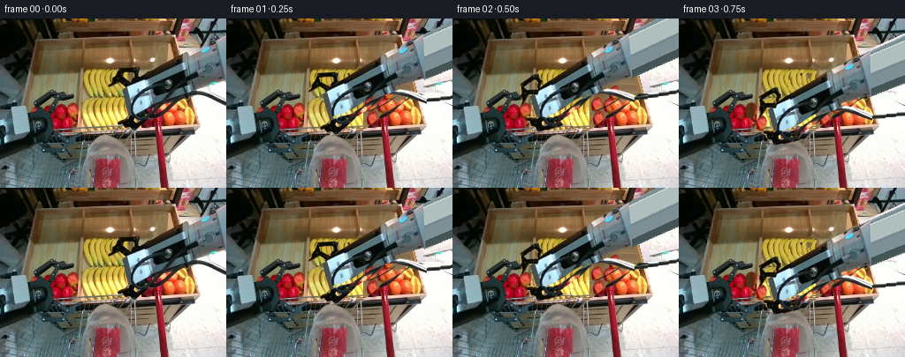
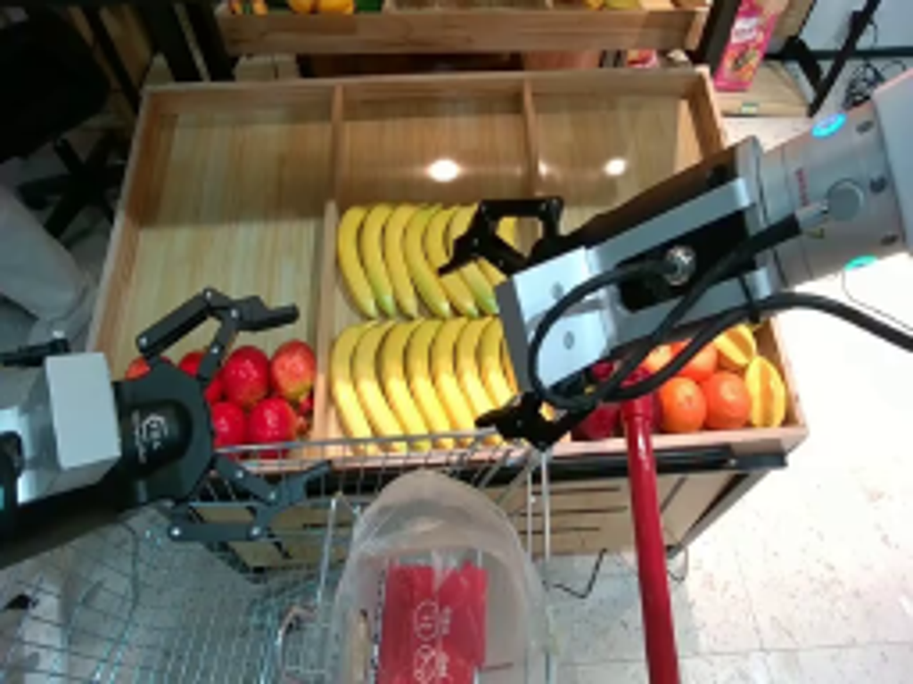
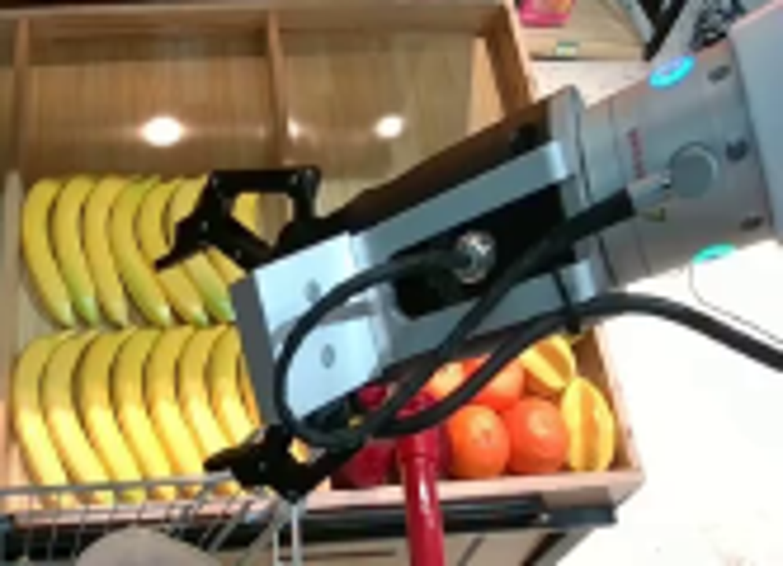
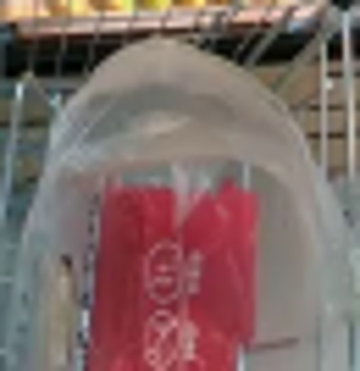
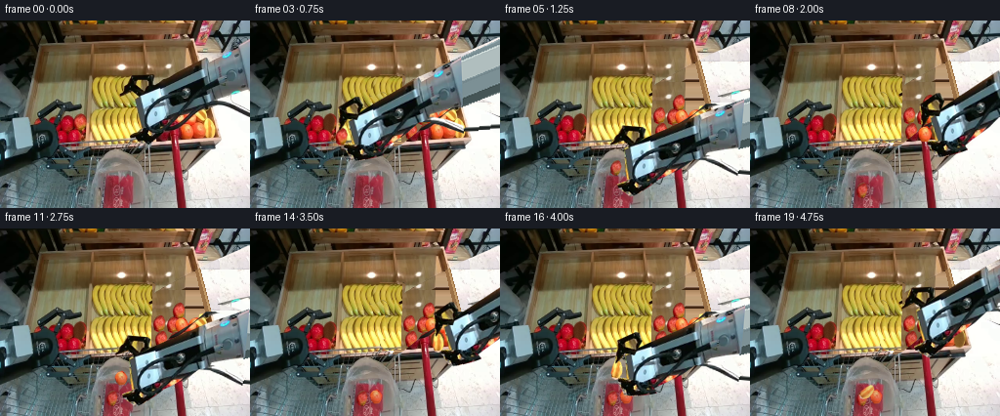
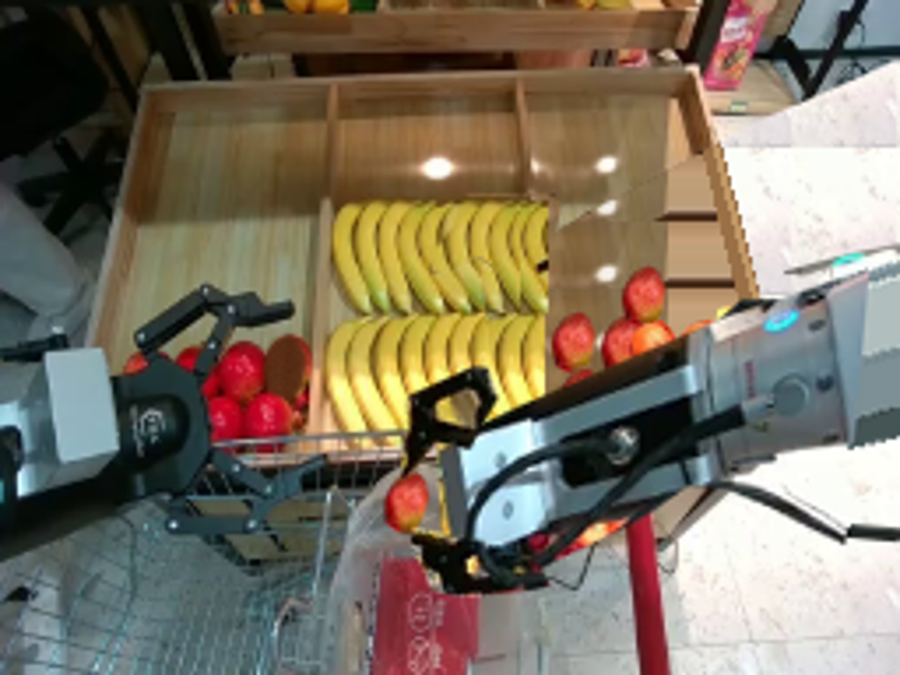
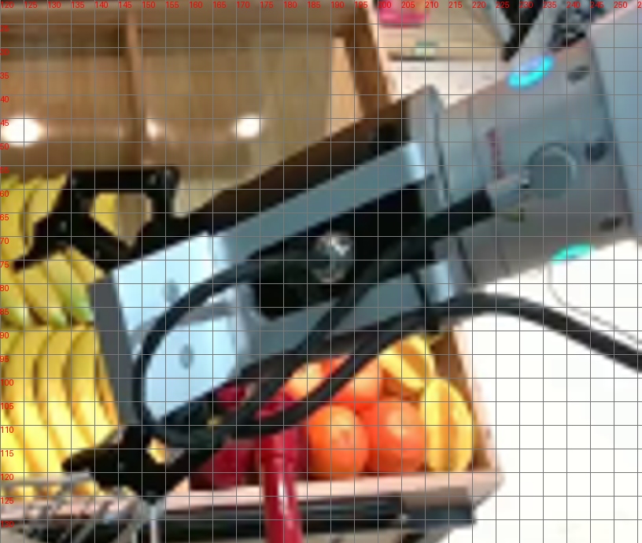
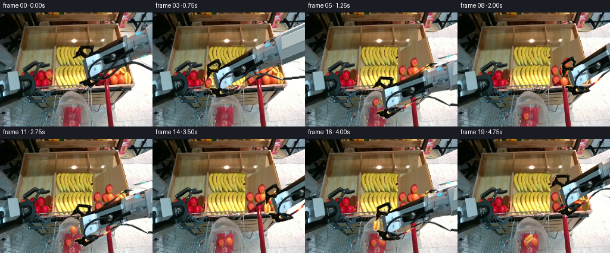

CODING AGENTS AS PIXEL WORLD MODELS
traex/GPT-6.1-Sol · common50_0000
点击播放 · 原生 RGB 像素
逐轮保存的候选
回放视频、检查图与代码变化。
每份候选均可单独播放。实际图片检查记录在下方工具轨迹中。
候选 01播放与检查图
点击播放 · 原生 RGB 像素


展开代码变化
--- 上一保存版本
+++ 本次保存版本
@@ -0,0 +1,214 @@
+from pathlib import Path
+import math
+import numpy as np
+from PIL import Image, ImageDraw, ImageFilter
+import artifact_io
+
+ROOT=Path(__file__).resolve().parent
+SRC=Image.open(ROOT/'first_frame.png').convert('RGB')
+W,H=SRC.size
+S=4
+
+def maskpoly(points, size=(W,H), blur=.3):
+ m=Image.new('L',(size[0]*S,size[1]*S));d=ImageDraw.Draw(m)
+ d.polygon([(round(x*S),round(y*S)) for x,y in points], fill=255)
+ m=m.resize(size,Image.Resampling.LANCZOS)
+ return m.filter(ImageFilter.GaussianBlur(blur)) if blur else m
+
+def cut(poly):
+ im=SRC.copy().convert('RGBA');im.putalpha(maskpoly(poly,blur=.12));return im
+
+bodypoly=[(256,18),(245,23),(229,30),(215,36),(208,40),(158,67),(138,79),(141,102),(144,112),(153,118),(164,115),(177,107),(197,95),(210,84),(221,84),(238,90),(256,97),(256,89),(239,82),(225,79),(221,79),(222,76),(241,71),(256,68)]
+toppoly=[(123,77),(125,72),(130,65),(132,59),(134,56),(155,56),(158,58),(157,67),(150,72),(144,77),(136,71),(129,75)]
+botpoly=[(134,116),(141,113),(146,111),(150,109),(158,106),(169,105),(175,108),(170,113),(164,118),(155,125),(148,128),(142,124),(135,120)]
+body=cut(bodypoly); top=cut(toppoly); bottom=cut(botpoly)
+rem=np.maximum.reduce([np.array(maskpoly(p,blur=0)) for p in [bodypoly,toppoly,botpoly]])
+# Include small antialiased silhouette margins in the revealed scene.
+remimg=Image.fromarray(rem).filter(ImageFilter.MaxFilter(3))
+
+# Build only the background that was originally occluded by the moving tool.
+rng=np.random.default_rng(13)
+y,x=np.mgrid[:H,:W]
+# Pale floor to the right of the display.
+floor=np.asarray(SRC).copy()
+for yy in range(H):
+ for xx in range(125,W):
+ sy=139+(yy%42); sx=225+(xx-225)%30
+ floor[yy,xx]=np.asarray(SRC)[sy,sx]
+base=Image.fromarray(floor)
+# Wooden tray, with its original vertical grain sampled from unobstructed wood.
+wood=np.asarray(SRC).copy()
+for yy in range(25,126):
+ for xx in range(90,224):
+ sy=32+(yy-25)%19
+ sx=min(190, max(43,xx))
+ wood[yy,xx]=np.clip(np.asarray(SRC)[sy,sx].astype(float)*(.91+.08*(yy/125)),0,255)
+wood=Image.fromarray(wood)
+traymask=maskpoly([(95,24),(197,22),(207,59),(224,122),(91,126)])
+base.paste(wood,(0,0),traymask)
+# Side wall of the sloping display crate.
+d=ImageDraw.Draw(base)
+d.polygon([(195,23),(200,24),(225,121),(219,122)], fill=(154,112,70))
+d.line([(199,28),(223,118)], fill=(193,153,103),width=2)
+# Restore both rows of bananas with copies of the unobstructed row segments.
+upper=SRC.crop((96,56,125,89))
+lower=SRC.crop((95,89,127,125))
+base.paste(upper,(96,56));base.paste(upper,(122,56))
+base.paste(SRC.crop((118,57,126,89)),(148,57))
+base.paste(lower,(95,89));base.paste(lower,(123,89))
+# The fruit layer is sampled from real fruit pixels rather than flat circles.
+applepoly=[(78,97),(82,95),(85,97),(87,102),(86,109),(84,113),(80,113),(76,111),(75,105),(76,100)]
+orangepoly=[(189,106),(194,105),(197,108),(199,112),(198,117),(195,121),(189,121),(186,117),(185,112),(186,109)]
+starpoly=[(210,103),(213,102),(216,103),(219,108),(220,114),(218,120),(215,122),(211,121),(209,116),(209,109)]
+apple=cut(applepoly);orange=cut(orangepoly);star=cut(starpoly)
+# Extra produce hidden by the initial arm: coherent continuation of the fruit rows.
+def paste_shift(dst,asset,dx,dy):
+ dst.alpha_composite(asset,(int(dx),int(dy)))
+base=base.convert('RGBA')
+for dx,dy in [(82,-7),(96,-6),(84,9),(98,10),(102,-20)]:
+ paste_shift(base,apple,dx,dy)
+for dx,dy in [(-6,-14),(8,-14),(0,0),(13,0)]:
+ paste_shift(base,orange,dx,dy)
+paste_shift(base,star,-6,-15);paste_shift(base,star,0,0)
+base=base.convert('RGB')
+# Front tray rim and cart frame, partially hidden by the first pose.
+d=ImageDraw.Draw(base)
+d.polygon([(147,124),(222,120),(226,121),(224,125),(146,129)], fill=(145,108,78))
+d.line([(147,125),(223,121)],fill=(213,173,123),width=2)
+d.line([(146,130),(220,126)],fill=(45,45,34),width=3)
+d.line([(152,129),(152,160)],fill=(160,160,142),width=1)
+d.line([(151,129),(151,160)],fill=(70,80,74),width=1)
+# Keep all unoccluded pixels exactly stationary.
+clean=SRC.copy();clean.paste(base,(0,0),remimg)
+clean.save(ROOT/'.tmp/clean.png')
+# Removal patches for each picked fruit retain shadow and the bottom of the bin.
+# These patches are revealed only as that fruit lifts away.
+def vacant_patch(poly, col, shade=True):
+ m=maskpoly(poly,blur=.6)
+ a=np.array(clean).copy().astype(float)
+ xx,yy=np.meshgrid(np.arange(W),np.arange(H))
+ # Grain and soft cavity shadow.
+ noise=rng.normal(0,1.4,(H,W))
+ for c in range(3): a[:,:,c]=np.clip(col[c]+noise+2*np.sin(xx*.9)+.18*(yy-110),0,255)
+ im=Image.fromarray(a.astype(np.uint8))
+ return im,m
+holes=[vacant_patch(applepoly,(89,46,22)),vacant_patch(orangepoly,(98,62,27)),vacant_patch(starpoly,(127,86,36))]
+
+# Extend the rigid arm beyond the input crop, using a shaded metallic shell.
+# It remains a single rigid body with the copied wrist and end effector.
+EXTW=430
+ext=Image.new('RGBA',(EXTW,H))
+ed=ImageDraw.Draw(ext)
+ed.polygon([(252,20),(386,-37),(412,13),(254,69)],fill=(124,144,149,255))
+ed.polygon([(254,23),(389,-29),(396,-9),(255,43)],fill=(176,190,190,255))
+ed.polygon([(254,61),(406,6),(410,16),(255,69)],fill=(69,85,86,255))
+ed.line([(256,22),(389,-28)],fill=(205,218,216),width=2)
+ed.line([(257,44),(397,-7)],fill=(116,135,140),width=2)
+# Extended flexible cable is fixed to the wrist, not stretched with the pose.
+pts=[]
+for t in np.linspace(0,1,50):
+ px=255+150*t;py=93-25*t+5*math.sin(t*math.pi)
+ pts.append((px,py))
+ed.line(pts,fill=(35,40,38),width=4)
+ed.line([(px,py-1) for px,py in pts],fill=(79,85,82),width=1)
+main=Image.new('RGBA',(EXTW,H));main.alpha_composite(ext);main.alpha_composite(body)
+
+# Coordinate transforms of rigid parts, performed once at supersampled resolution.
+def affine_asset(asset, position, angle=0, pivot=(131,96), local_angle=0, local_pivot=None):
+ # rotation of finger at its hinge, followed by the rigid end-effector transform
+ A=math.radians(angle); c,s=math.cos(A),math.sin(A)
+ R=np.array([[c,-s],[s,c]])
+ offset=np.array(position)-R@np.array(pivot)
+ if local_pivot is not None:
+ b=math.radians(local_angle); cc,ss=math.cos(b),math.sin(b)
+ Q=np.array([[cc,-ss],[ss,cc]])
+ offset=offset+R@(np.array(local_pivot)-Q@np.array(local_pivot))
+ R=R@Q
+ inv=R.T; trans=-inv@offset
+ coeff=(inv[0,0],inv[0,1],trans[0],inv[1,0],inv[1,1],trans[1])
+ return asset.transform((W,H),Image.Transform.AFFINE,coeff,Image.Resampling.BICUBIC)
+
+assets=[apple,orange,star]
+centers=[(81.5,104.5),(192,113),(214.5,112)]
+# Position, rotation, jaw closure; tightly timed sequential pick-and-place motion.
+poses=[
+ ((131,96),0,0),
+ ((102,102),-3,0),
+ ((81.5,104.5),-5,1),
+ ((94,119),-2,1),
+ ((116,143),5,1),
+ ((119,147),5,0),
+ ((150,128),-5,0),
+ ((192,113),-8,1),
+ ((179,116),-5,1),
+ ((146,132),1,1),
+ ((123,144),5,1),
+ ((124,149),5,0),
+ ((169,126),-4,0),
+ ((214.5,112),-8,1),
+ ((193,117),-5,1),
+ ((151,133),1,1),
+ ((120,145),5,1),
+ ((119,149),5,0),
+ ((144,123),0,0),
+ ((164,101),-3,0),
+]
+
+
+def translated_fruit(asset,center,dest,angle=0,scale=1):
+ a=math.radians(angle);c=math.cos(a)*scale;s=math.sin(a)*scale
+ R=np.array([[c,-s],[s,c]]);inv=np.linalg.inv(R)
+ offset=np.array(dest)-R@np.array(center);b=-inv@offset
+ return asset.transform((W,H),Image.Transform.AFFINE,(inv[0,0],inv[0,1],b[0],inv[1,0],inv[1,1],b[1]),Image.Resampling.BICUBIC)
+
+frames=[]
+for i,(pos,ang,close) in enumerate(poses):
+ if i==0:frames.append(np.asarray(SRC).copy());continue
+ bg=clean.copy()
+ # Three independent stable source vacancies.
+ for k,pick in enumerate([3,8,14]):
+ if i>=pick:
+ hp,hm=holes[k];bg.paste(hp,(0,0),hm)
+ scene=bg.convert('RGBA')
+ # Fruits inside bag settle behind a translucent front film.
+ deposits=[]
+ if i>=5:
+ dest=(119,151) if i==5 else ((116,165) if i==6 else (115,174))
+ deposits.append((0,dest,8,.90))
+ if i>=11:
+ dest=(124,153) if i==11 else ((129,164) if i==12 else (129,172))
+ deposits.append((1,dest,-6,.90))
+ if i>=17:
+ dest=(119,153) if i==17 else ((118,164) if i==18 else (120,168))
+ deposits.append((2,dest,53,.90))
+ for k,dest,rot,sc in deposits:
+ f=translated_fruit(assets[k],centers[k],dest,rot,sc)
+ # The contents are visible through the transparent shopping bag, softened by film.
+ a=np.array(f);rgb=a[:,:,:3].astype(float)
+ film=np.asarray(SRC).astype(float)
+ strength=.76 if dest[1]>159 else .88
+ a[:,:,:3]=np.clip(rgb*strength+film*(1-strength),0,255).astype(np.uint8)
+ scene.alpha_composite(Image.fromarray(a))
+ # Tiny contact shadow under fruit during transport.
+ held=None
+ if 3<=i<=4: held=0
+ if 8<=i<=10: held=1
+ if 14<=i<=16: held=2
+ if held is not None:
+ fruit=translated_fruit(assets[held],centers[held],pos,ang-poses[[2,7,13][held]][1])
+ else: fruit=None
+ # Tool shadows shift over the display, but never shake the fixed camera.
+ cast=Image.new('RGBA',(W,H))
+ cd=ImageDraw.Draw(cast)
+ cd.ellipse((pos[0]-15,pos[1]+4,pos[0]+29,pos[1]+17),fill=(17,16,12,30))
+ cast=cast.filter(ImageFilter.GaussianBlur(3))
+ scene.alpha_composite(cast)
+ # Closed jaws flank the carried fruit; the central arm is a rigid bitmap.
+ scene.alpha_composite(affine_asset(main,pos,ang))
+ if fruit is not None:scene.alpha_composite(fruit)
+ scene.alpha_composite(affine_asset(top,pos,ang,local_angle=-29*close,local_pivot=(150,72)))
+ scene.alpha_composite(affine_asset(bottom,pos,ang,local_angle=29*close,local_pivot=(159,109)))
+ frames.append(np.asarray(scene.convert('RGB'),dtype=np.uint8))
+
+frames=np.stack(frames)
+artifact_io.save(frames,ROOT)
候选 02播放与检查图
点击播放 · 原生 RGB 像素

展开代码变化
--- 上一保存版本
+++ 本次保存版本
@@ -22,7 +22,14 @@
toppoly=[(123,77),(125,72),(130,65),(132,59),(134,56),(155,56),(158,58),(157,67),(150,72),(144,77),(136,71),(129,75)]
botpoly=[(134,116),(141,113),(146,111),(150,109),(158,106),(169,105),(175,108),(170,113),(164,118),(155,125),(148,128),(142,124),(135,120)]
body=cut(bodypoly); top=cut(toppoly); bottom=cut(botpoly)
-rem=np.maximum.reduce([np.array(maskpoly(p,blur=0)) for p in [bodypoly,toppoly,botpoly]])
+# Preserve the actual open spaces inside the linkage and the cable loop.
+voids=[[(150,109),(157,108),(170,104),(184,96),(197,87),(205,84),(201,84),(188,89),(175,97),(162,103),(149,106)],
+ [(136,61),(151,61),(151,66),(146,71),(137,66)]]
+for asset,void in [(body,voids[0]),(top,voids[1])]:
+ a=np.array(asset); vm=np.array(maskpoly(void,blur=.12))
+ a[:,:,3]=(a[:,:,3].astype(float)*(1-vm.astype(float)/255)).astype(np.uint8)
+ asset.paste(Image.fromarray(a),(0,0))
+rem=np.maximum.reduce([np.array(a.getchannel('A')) for a in [body,top,bottom]])
# Include small antialiased silhouette margins in the revealed scene.
remimg=Image.fromarray(rem).filter(ImageFilter.MaxFilter(3))
@@ -40,9 +47,9 @@
wood=np.asarray(SRC).copy()
for yy in range(25,126):
for xx in range(90,224):
- sy=32+(yy-25)%19
- sx=min(190, max(43,xx))
- wood[yy,xx]=np.clip(np.asarray(SRC)[sy,sx].astype(float)*(.91+.08*(yy/125)),0,255)
+ sy=32+(yy-25)%10
+ sx=min(189, max(101,xx))
+ wood[yy,xx]=np.clip(np.asarray(SRC)[sy,sx].astype(float)*(.88+.12*(yy/125)),0,255)
wood=Image.fromarray(wood)
traymask=maskpoly([(95,24),(197,22),(207,59),(224,122),(91,126)])
base.paste(wood,(0,0),traymask)
候选 03播放与检查图
点击播放 · 原生 RGB 像素

展开代码变化
代码未变化；重新保存了产物。
候选 04播放与检查图
点击播放 · 原生 RGB 像素


展开代码变化
--- 上一保存版本
+++ 本次保存版本
@@ -21,15 +21,26 @@
bodypoly=[(256,18),(245,23),(229,30),(215,36),(208,40),(158,67),(138,79),(141,102),(144,112),(153,118),(164,115),(177,107),(197,95),(210,84),(221,84),(238,90),(256,97),(256,89),(239,82),(225,79),(221,79),(222,76),(241,71),(256,68)]
toppoly=[(123,77),(125,72),(130,65),(132,59),(134,56),(155,56),(158,58),(157,67),(150,72),(144,77),(136,71),(129,75)]
botpoly=[(134,116),(141,113),(146,111),(150,109),(158,106),(169,105),(175,108),(170,113),(164,118),(155,125),(148,128),(142,124),(135,120)]
-body=cut(bodypoly); top=cut(toppoly); bottom=cut(botpoly)
+body=cut([(256,18),(245,23),(229,30),(215,36),(208,40),(158,67),
+ (138,79),(140,97),(145,108),(153,107),(172,97),(194,86),
+ (211,81),(218,78),(223,76),(241,71),(256,68)])
+# The free cable is a narrow, fixed curve; no fruit pixels move with it.
+cable=Image.new('L',(W*S,H*S));dd=ImageDraw.Draw(cable)
+cablepoints=[(190,72),(180,74),(167,77),(157,81),(151,87),(148,95),
+ (148,103),(151,109),(158,112),(166,111),(177,106),(189,98),
+ (199,89),(208,84),(218,83),(228,84),(241,89),(256,94)]
+dd.line([(int(x*S),int(y*S)) for x,y in cablepoints],fill=255,width=3*S,joint='curve')
+cm=np.array(cable.resize((W,H),Image.Resampling.LANCZOS))
+ba=np.array(body);ba[:,:,3]=np.maximum(ba[:,:,3],cm);body=Image.fromarray(ba)
+top=cut(toppoly); bottom=cut(botpoly)
# Preserve the actual open spaces inside the linkage and the cable loop.
voids=[[(150,109),(157,108),(170,104),(184,96),(197,87),(205,84),(201,84),(188,89),(175,97),(162,103),(149,106)],
[(136,61),(151,61),(151,66),(146,71),(137,66)]]
-for asset,void in [(body,voids[0]),(top,voids[1])]:
+for asset,void in [(top,voids[1])]:
a=np.array(asset); vm=np.array(maskpoly(void,blur=.12))
a[:,:,3]=(a[:,:,3].astype(float)*(1-vm.astype(float)/255)).astype(np.uint8)
asset.paste(Image.fromarray(a),(0,0))
-rem=np.maximum.reduce([np.array(a.getchannel('A')) for a in [body,top,bottom]])
+rem=np.maximum.reduce([np.array(maskpoly(p,blur=0)) for p in [bodypoly,toppoly,botpoly]])
# Include small antialiased silhouette margins in the revealed scene.
remimg=Image.fromarray(rem).filter(ImageFilter.MaxFilter(3))
@@ -47,9 +58,9 @@
wood=np.asarray(SRC).copy()
for yy in range(25,126):
for xx in range(90,224):
- sy=32+(yy-25)%10
sx=min(189, max(101,xx))
- wood[yy,xx]=np.clip(np.asarray(SRC)[sy,sx].astype(float)*(.88+.12*(yy/125)),0,255)
+ val=np.median(np.asarray(SRC)[32:41,sx].astype(float),axis=0)
+ wood[yy,xx]=np.clip(val*(.93+.07*yy/125)+1.3*math.sin(yy*.19),0,255)
wood=Image.fromarray(wood)
traymask=maskpoly([(95,24),(197,22),(207,59),(224,122),(91,126)])
base.paste(wood,(0,0),traymask)
候选 05播放与检查图

可观测工具轨迹
实际执行的命令与返回图片。
命令 1exit 0
/bin/bash -lc 'ls -la; cat prompt.txt; cat GENERATION_RULES.md'
命令 2exit 0
/bin/bash -lc "cat task_spec.json; cat artifact_io.py; python - <<'PY'
from PIL import Image
im=Image.open('first_frame.png'); print(im.size); im.resize((1024,768)).save('.tmp/first_large.png')
PY"命令 3exit 0
/bin/bash -lc "python - <<'PY'
from PIL import Image,ImageDraw
im=Image.open('first_frame.png').resize((1024,768)); d=ImageDraw.Draw(im)
for x in range(0,256,10):
d.line((x*4,0,x*4,768),fill=(255,255,255,65));d.text((x*4,0),str(x),fill='red')
for y in range(0,192,10):
d.line((0,y*4,1024,y*4),fill=(255,255,255,65));d.text((0,y*4),str(y),fill='red')
im.save('.tmp/grid.png')
PY"命令 4exit 0
/bin/bash -lc "python - <<'PY'
from PIL import Image
im=Image.open('first_frame.png')
im.crop((90,20,256,140)).resize((996,720)).save('.tmp/tool.png')
im.crop((90,125,155,192)).resize((520,536)).save('.tmp/bag.png')
PY"命令 5exit 0
/bin/bash -lc "cat > generate.py <<'PY'
from pathlib import Path
import math
import numpy as np
from PIL import Image, ImageDraw, ImageFilter
import artifact_io
ROOT=Path(__file__).resolve().parent
SRC=Image.open(ROOT/'first_frame.png').convert('RGB')
W,H=SRC.size
S=4
def maskpoly(points, size=(W,H), blur=.3):
m=Image.new('L',(size[0]*S,size[1]*S));d=ImageDraw.Draw(m)
d.polygon([(round(x*S),round(y*S)) for x,y in points], fill=255)
m=m.resize(size,Image.Resampling.LANCZOS)
return m.filter(ImageFilter.GaussianBlur(blur)) if blur else m
def cut(poly):
im=SRC.copy().convert('RGBA');im.putalpha(maskpoly(poly,blur=.12));return im
bodypoly=[(256,18),(245,23),(229,30),(215,36),(208,40),(158,67),(138,79),(141,102),(144,112),(153,118),(164,115),(177,107),(197,95),(210,84),(221,84),(238,90),(256,97),(256,89),(239,82),(225,79),(221,79),(222,76),(241,71),(256,68)]
toppoly=[(123,77),(125,72),(130,65),(132,59),(134,56),(155,56),(158,58),(157,67),(150,72),(144,77),(136,71),(129,75)]
botpoly=[(134,116),(141,113),(146,111),(150,109),(158,106),(169,105),(175,108),(170,113),(164,118),(155,125),(148,128),(142,124),(135,120)]
body=cut(bodypoly); top=cut(toppoly); bottom=cut(botpoly)
rem=np.maximum.reduce([np.array(maskpoly(p,blur=0)) for p in [bodypoly,toppoly,botpoly]])
# Include small antialiased silhouette margins in the revealed scene.
remimg=Image.fromarray(rem).filter(ImageFilter.MaxFilter(3))
# Build only the background that was originally occluded by the moving tool.
rng=np.random.default_rng(13)
y,x=np.mgrid[:H,:W]
# Pale floor to the right of the display.
floor=np.asarray(SRC).copy()
for yy in range(H):
for xx in range(125,W):
sy=139+(yy%42); sx=225+(xx-225)%30
floor[yy,xx]=np.asarray(SRC)[sy,sx]
base=Image.fromarray(floor)
# Wooden tray, with its original vertical grain sampled from unobstructed wood.
wood=np.asarray(SRC).copy()
for yy in range(25,126):
for xx in range(90,224):
sy=32+(yy-25)%19
sx=min(190, max(43,xx))
wood[yy,xx]=np.clip(np.asarray(SRC)[sy,sx].astype(float)*(.91+.08*(yy/125)),0,255)
wood=Image.fromarray(wood)
traymask=maskpoly([(95,24),(197,22),(207,59),(224,122),(91,126)])
base.paste(wood,(0,0),traymask)
# Side wall of the sloping display crate.
d=ImageDraw.Draw(base)
d.polygon([(195,23),(200,24),(225,121),(219,122)], fill=(154,112,70))
d.line([(199,28),(223,118)], fill=(193,153,103),width=2)
# Restore both rows of bananas with copies of the unobstructed row segments.
upper=SRC.crop((96,56,125,89))
lower=SRC.crop((95,89,127,125))
base.paste(upper,(96,56));base.paste(upper,(122,56))
base.paste(SRC.crop((118,57,126,89)),(148,57))
base.paste(lower,(95,89));base.paste(lower,(123,89))
# The fruit layer is sampled from real fruit pixels rather than flat circles.
applepoly=[(78,97),(82,95),(85,97),(87,102),(86,109),(84,113),(80,113),(76,111),(75,105),(76,100)]
orangepoly=[(189,106),(194,105),(197,108),(199,112),(198,117),(195,121),(189,121),(186,117),(185,112),(186,109)]
starpoly=[(210,103),(213,102),(216,103),(219,108),(220,114),(218,120),(215,122),(211,121),(209,116),(209,109)]
apple=cut(applepoly);orange=cut(orangepoly);star=cut(starpoly)
# Extra produce hidden by the initial arm: coherent continuation of the fruit rows.
def paste_shift(dst,asset,dx,dy):
dst.alpha_composite(asset,(int(dx),int(dy)))
base=base.convert('RGBA')
for dx,dy in [(82,-7),(96,-6),(84,9),(98,10),(102,-20)]:
paste_shift(base,apple,dx,dy)
for dx,dy in [(-6,-14),(8,-14),(0,0),(13,0)]:
paste_shift(base,orange,dx,dy)
paste_shift(base,star,-6,-15);paste_shift(base,star,0,0)
base=base.convert('RGB')
# Front tray rim and cart frame, partially hidden by the first pose.
d=ImageDraw.Draw(base)
d.polygon([(147,124),(222,120),(226,121),(224,125),(146,129)], fill=(145,108,78))
d.line([(147,125),(223,121)],fill=(213,173,123),width=2)
d.line([(146,130),(220,126)],fill=(45,45,34),width=3)
d.line([(152,129),(152,160)],fill=(160,160,142),width=1)
d.line([(151,129),(151,160)],fill=(70,80,74),width=1)
# Keep all unoccluded pixels exactly stationary.
clean=SRC.copy();clean.paste(base,(0,0),remimg)
clean.save(ROOT/'.tmp/clean.png')
# Removal patches for each picked fruit retain shadow and the bottom of the bin.
# These patches are revealed only as that fruit lifts away.
def vacant_patch(poly, col, shade=True):
m=maskpoly(poly,blur=.6)
a=np.array(clean).copy().astype(float)
xx,yy=np.meshgrid(np.arange(W),np.arange(H))
# Grain and soft cavity shadow.
noise=rng.normal(0,1.4,(H,W))
for c in range(3): a[:,:,c]=np.clip(col[c]+noise+2*np.sin(xx*.9)+.18*(yy-110),0,255)
im=Image.fromarray(a.astype(np.uint8))
return im,m
holes=[vacant_patch(applepoly,(89,46,22)),vacant_patch(orangepoly,(98,62,27)),vacant_patch(starpoly,(127,86,36))]
# Extend the rigid arm beyond the input crop, using a shaded metallic shell.
# It remains a single rigid body with the copied wrist and end effector.
EXTW=430
ext=Image.new('RGBA',(EXTW,H))
ed=ImageDraw.Draw(ext)
ed.polygon([(252,20),(386,-37),(412,13),(254,69)],fill=(124,144,149,255))
ed.polygon([(254,23),(389,-29),(396,-9),(255,43)],fill=(176,190,190,255))
ed.polygon([(254,61),(406,6),(410,16),(255,69)],fill=(69,85,86,255))
ed.line([(256,22),(389,-28)],fill=(205,218,216),width=2)
ed.line([(257,44),(397,-7)],fill=(116,135,140),width=2)
# Extended flexible cable is fixed to the wrist, not stretched with the pose.
pts=[]
for t in np.linspace(0,1,50):
px=255+150*t;py=93-25*t+5*math.sin(t*math.pi)
pts.append((px,py))
ed.line(pts,fill=(35,40,38),width=4)
ed.line([(px,py-1) for px,py in pts],fill=(79,85,82),width=1)
main=Image.new('RGBA',(EXTW,H));main.alpha_composite(ext);main.alpha_composite(body)
# Coordinate transforms of rigid parts, performed once at supersampled resolution.
def affine_asset(asset, position, angle=0, pivot=(131,96), local_angle=0, local_pivot=None):
# rotation of finger at its hinge, followed by the rigid end-effector transform
A=math.radians(angle); c,s=math.cos(A),math.sin(A)
R=np.array([[c,-s],[s,c]])
offset=np.array(position)-R@np.array(pivot)
if local_pivot is not None:
b=math.radians(local_angle); cc,ss=math.cos(b),math.sin(b)
Q=np.array([[cc,-ss],[ss,cc]])
offset=offset+R@(np.array(local_pivot)-Q@np.array(local_pivot))
R=R@Q
inv=R.T; trans=-inv@offset
coeff=(inv[0,0],inv[0,1],trans[0],inv[1,0],inv[1,1],trans[1])
return asset.transform((W,H),Image.Transform.AFFINE,coeff,Image.Resampling.BICUBIC)
assets=[apple,orange,star]
centers=[(81.5,104.5),(192,113),(214.5,112)]
# Position, rotation, jaw closure; tightly timed sequential pick-and-place motion.
poses=[
((131,96),0,0),
((102,102),-3,0),
((81.5,104.5),-5,1),
((94,119),-2,1),
((116,143),5,1),
((119,147),5,0),
((150,128),-5,0),
((192,113),-8,1),
((179,116),-5,1),
((146,132),1,1),
((123,144),5,1),
((124,149),5,0),
((169,126),-4,0),
((214.5,112),-8,1),
((193,117),-5,1),
((151,133),1,1),
((120,145),5,1),
((119,149),5,0),
((144,123),0,0),
((164,101),-3,0),
]
def translated_fruit(asset,center,dest,angle=0,scale=1):
a=math.radians(angle);c=math.cos(a)*scale;s=math.sin(a)*scale
R=np.array([[c,-s],[s,c]]);inv=np.linalg.inv(R)
offset=np.array(dest)-R@np.array(center);b=-inv@offset
return asset.transform((W,H),Image.Transform.AFFINE,(inv[0,0],inv[0,1],b[0],inv[1,0],inv[1,1],b[1]),Image.Resampling.BICUBIC)
frames=[]
for i,(pos,ang,close) in enumerate(poses):
if i==0:frames.append(np.asarray(SRC).copy());continue
bg=clean.copy()
# Three independent stable source vacancies.
for k,pick in enumerate([3,8,14]):
if i>=pick:
hp,hm=holes[k];bg.paste(hp,(0,0),hm)
scene=bg.convert('RGBA')
# Fruits inside bag settle behind a translucent front film.
deposits=[]
if i>=5:
dest=(119,151) if i==5 else ((116,165) if i==6 else (115,174))
deposits.append((0,dest,8,.90))
if i>=11:
dest=(124,153) if i==11 else ((129,164) if i==12 else (129,172))
deposits.append((1,dest,-6,.90))
if i>=17:
dest=(119,153) if i==17 else ((118,164) if i==18 else (120,168))
deposits.append((2,dest,53,.90))
for k,dest,rot,sc in deposits:
f=translated_fruit(assets[k],centers[k],dest,rot,sc)
# The contents are visible through the transparent shopping bag, softened by film.
a=np.array(f);rgb=a[:,:,:3].astype(float)
film=np.asarray(SRC).astype(float)
strength=.76 if dest[1]>159 else .88
a[:,:,:3]=np.clip(rgb*strength+film*(1-strength),0,255).astype(np.uint8)
scene.alpha_composite(Image.fromarray(a))
# Tiny contact shadow under fruit during transport.
held=None
if 3<=i<=4: held=0
if 8<=i<=10: held=1
if 14<=i<=16: held=2
if held is not None:
fruit=translated_fruit(assets[held],centers[held],pos,ang-poses[[2,7,13][held]][1])
else: fruit=None
# Tool shadows shift over the display, but never shake the fixed camera.
cast=Image.new('RGBA',(W,H))
cd=ImageDraw.Draw(cast)
cd.ellipse((pos[0]-15,pos[1]+4,pos[0]+29,pos[1]+17),fill=(17,16,12,30))
cast=cast.filter(ImageFilter.GaussianBlur(3))
scene.alpha_composite(cast)
# Closed jaws flank the carried fruit; the central arm is a rigid bitmap.
scene.alpha_composite(affine_asset(main,pos,ang))
if fruit is not None:scene.alpha_composite(fruit)
scene.alpha_composite(affine_asset(top,pos,ang,local_angle=-29*close,local_pivot=(150,72)))
scene.alpha_composite(affine_asset(bottom,pos,ang,local_angle=29*close,local_pivot=(159,109)))
frames.append(np.asarray(scene.convert('RGB'),dtype=np.uint8))
frames=np.stack(frames)
artifact_io.save(frames,ROOT)
PY
python generate.py"命令 6exit 0
/bin/bash -lc "python - <<'PY'
from PIL import Image
for f in [2,4,7,10,13,16,19]:
Image.open(f'frames/{f:02d}.png').resize((1024,768)).save(f'.tmp/f{f}.png')
PY"命令 7exit 0
/bin/bash -lc "python - <<'PY'
from PIL import Image,ImageDraw
im=Image.open('first_frame.png').resize((1536,1152));d=ImageDraw.Draw(im)
for x in range(120,256,5):
d.line((x*6,20*6,x*6,135*6),fill=(120,120,120));d.text((x*6,20*6),str(x),fill='red')
for y in range(25,135,5):
d.line((120*6,y*6,256*6,y*6),fill=(120,120,120));d.text((120*6,y*6),str(y),fill='red')
im.crop((120*6,20*6,1536,135*6)).save('.tmp/toolgrid.png')
PY"命令 8exit 0
/bin/bash -lc "python generate.py; python - <<'PY'
from PIL import Image
Image.open('frames/04.png').resize((1024,768)).save('.tmp/revised4.png')
PY"命令 9exit 0
/bin/bash -lc "python generate.py; python - <<'PY'
from PIL import Image
import numpy as np
f=np.stack([np.asarray(Image.open(f'frames/{i:02d}.png')) for i in range(20)])
assert f.shape==(20,192,256,3) and f.dtype==np.uint8
assert np.array_equal(f[0],np.asarray(Image.open('first_frame.png').convert('RGB')))
print('Verified:',f.shape,f.dtype,'first frame pixel-identical')
Image.open('frames/04.png').resize((1024,768)).save('.tmp/final4.png')
PY"视觉工具实际返回图片 1

视觉工具实际返回图片 2

视觉工具实际返回图片 3

视觉工具实际返回图片 4

视觉工具实际返回图片 5

视觉工具实际返回图片 6

视觉工具实际返回图片 7

视觉工具实际返回图片 8
视觉工具实际返回图片 9

保存候选 5 份；完成命令 9 次；可验证图片返回 9 张。原始 API 响应与完整日志保留在本地。